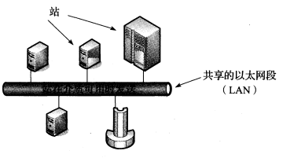
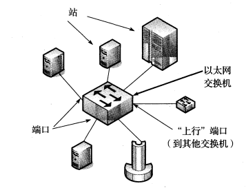
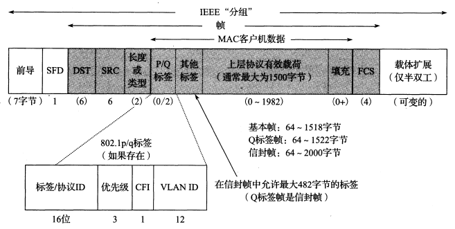
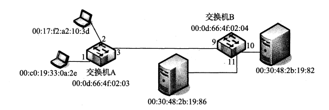

[TCP/IP详解]:链路层
术语介绍
PDU: 消息对象，因特网的每一层都有自己的消息对象，传输层的消息对象为报文段，链路层的消息对象为帧
MTU: 最大传输单元，用于描述链路层帧有效载荷的最大长度，该值通常为1500字节
路径MTU: 当两台主机跨越多个网络进行通信时，每条链路可能有不同的MTU, 在所有网络路径上，最小的MTU被称为路径MTU
有关链路层的知识点很繁杂，并且过于底层，因此只做简单介绍
1. MAC协议
CSMA/CD
最开始的以太网的网络结构如下所示

- 多个网络站点被连接到同一个共享的电缆段之上，在任何给定的时间，网络中只能有一个帧进行传输
带冲突检测的载波侦听多路访问(CSMA/CD)
这是一种在每个以太网接口上使用的分布式算法，用于协调每个站点发送数据
算法描述:
- 站点首先检测目前网络上正在发送的信号，并在网络空闲时发送自己的帧，即载波侦听
- 如果其它站碰巧同时发送，那么重叠的电信号将会被是做一次碰撞，此时，每个站将会等待一段随机时间，然后重新发送
- 最终，每个站要么得到机会发送，要么在一定此时的重新发送失败后超时
MAC协议
**介质访问控制协议(MAC)**其实是CSMA/CD这种协议的正式名称，可以理解为它的超集
MAC协议包含竞争协议(如CSMA/CD)和协调协议两种
现状
如今，共享电缆已经被双绞线所替代，如CSMA/CD之类的竞争协议不再流行，现在的网络结果基于交换机，站点之间的线路通常不共享

2. 以太网帧格式
图例

一些比较重要的字段:
前导
用于时钟同步
SFD
帧起始分隔符，表示帧的开始，为固定值0xAB
DST/SRC
MAC地址
有效载荷
该字段用于存放上层PDU, 由于有效载荷有着最小字节要求，如果字节数不够，后面会使用0进行填充
3. 网桥与交换机
- 网桥: 网桥用于连接多个物理的链路层网络，交换机即是高性能的网桥

上面的图例中，每个交换机都有端口，用一个编号表示，每个交换机，每个站点，都有自己的MAC地址
下面分析一下链路层帧在经过网桥(链路层帧)之后会发生什么：
每个交换机内部都会有一张表，每个条目是一个{站点MAC地址，端口编号}对，当第一次打开一个交换机时，该表为空
当一个链路层帧到达交换机，且该帧的目的地址与交换机的MAC地址不相符时，交换机会尝试在表中进行寻找
如果没有找到对应的条目，它会向其它所有端口发送该链路层帧， 即该帧会被复制很多份，有点类似于广播
同时，交换机在自己的表中做好记录(忽略细节)
如果找到了，则会将链路层帧经过条目指定的端口发出
由于站可能出现移动，网卡更换，MAC地址改变的情况，所以网桥不能假设其表中记录的地址一定是正确的，因此，网桥会为每个条目启动一个定时器，如果超过一定时间仍没有收到新的去往相同MAC地址的帧，就会清除该条目
4. 环回
有时，客户可能希望使用Internet协议来与本地上的服务器进行通信，大多数系统实现了这一功能，它们使用一个虚拟的环回网络接口来实现，其使用软件实现，并没有与之对应的网卡
Linux环境中的环回
Linux为环回接口分配的IPV4地址为127.0.0.1, IPV6地址则是(::1), 为它分配的名称叫
localhost, 简写为lo注意点
- 发送到环回接口的IP数据报不会出现在任何网络中
- 发送到环回接口的IP数据报会经过传输层以及网络层的传输，当数据报离开网络层时重新将其送回本地的网络层
5. 其它协议
STP
由于网络中存在很多交换机，这些交换机可能会使得帧在它们之间不断循环，即形成回路，链路层使用**生成树协议(STP)**来解决该问题
PPP
PPP表示点到点协议，本质上其实是一个协议集合，它用于在两个节点之间创建直接连接，进而传递IP数据报
除此之外，该协议还提供连接认证，传输加密以及压缩等服务
本博客所有文章除特别声明外，均采用 CC BY-SA 4.0 协议 ，转载请注明出处！